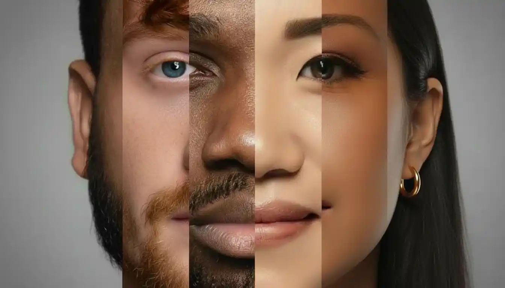
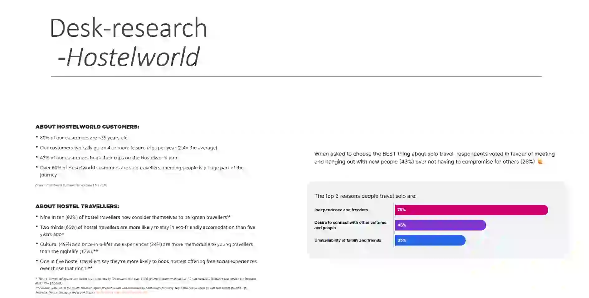
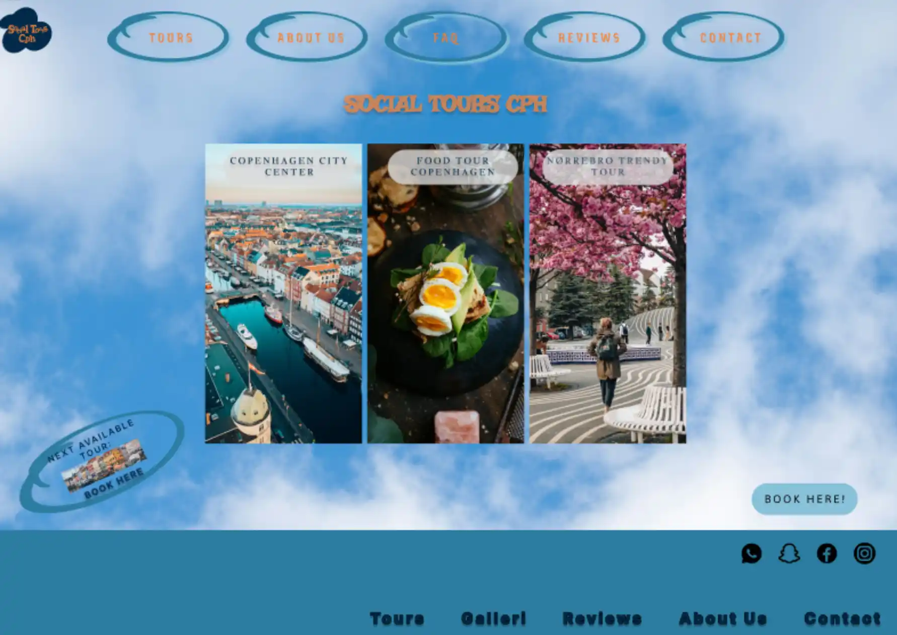
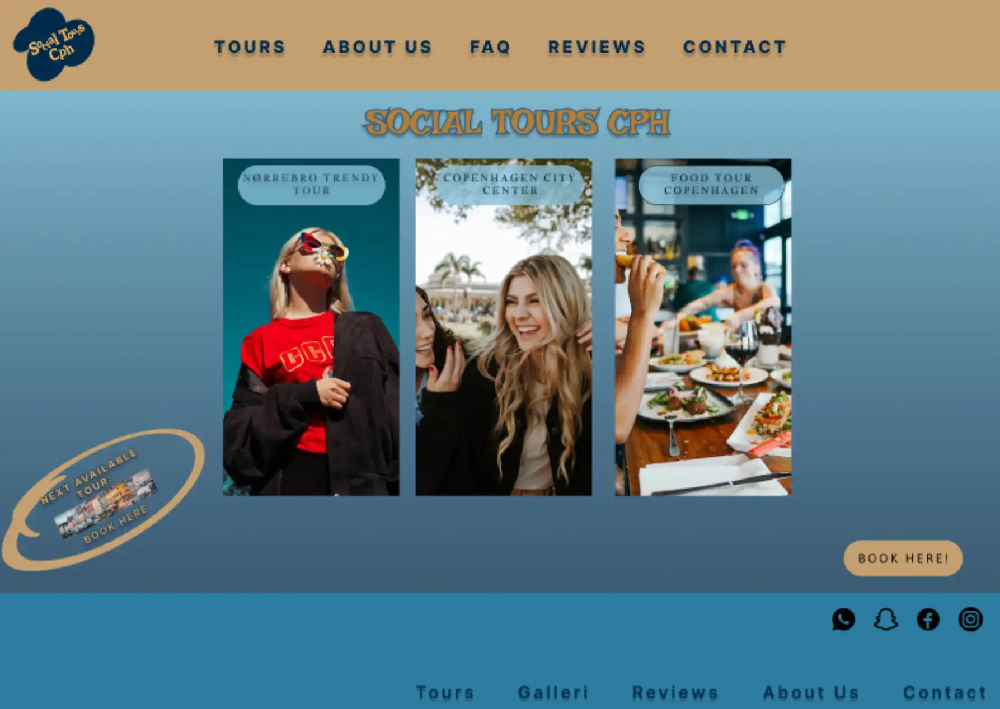
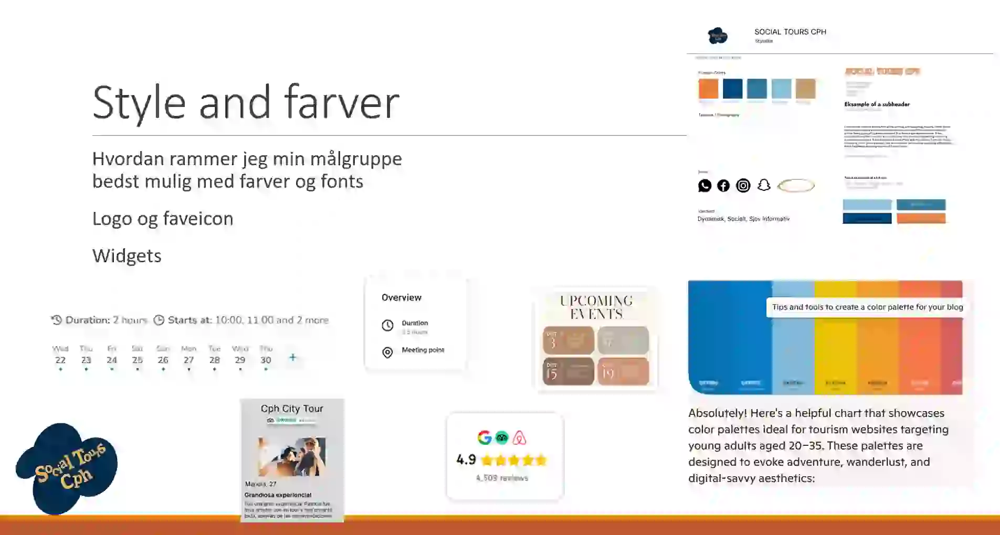
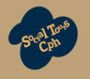

Tema 3
Grundlæggende UX/UI
INTRO TIL TEMAET
I dette forløb arbejdede vi med både UX og UI, der tilsammen skaber
fundamentet for et velfungerende digitalt produkt. Inden for UX
arbejdede vi med researchmetoder som interviews, observationer og
desk-research for at forstå brugernes behov og adfærd. Vi udførte
tests samt analyserede struktur, navigation og flows.
I UI-delen arbejdede vi med farver, symboler og visuelle principper,
og hvordan disse elementer i samspil med former og typografi, kan
skabe en stemning, der matcher målgruppen. På baggrund af vores
research udviklede vi moodboards og styletiles, som dannede den
visuelle retning for vores projekt.
Vi dykkede også dybere ned i Figma, hvor vi gjorde vores prototyper
klikbare samt omsatte egne tegninger og former til brugbare logoer.

Research, user stories og målgruppe
UX-research og målgruppeforståelse, 'Social Tours Cph'
Læs mere her
I dette forløb arbejdede vi med researchprocesserne bag
udviklingen af et nyt website. Vi lærte at definere vores
målgruppe og kommunikere mere præcist til de mennesker, vi
ønskede at engagere.
I mit projekt, 'Social Tours Cph', fokuserede jeg på
kvalitative metoder som interviews, desk-research og
observationer. Disse metoder gav mig indblik i brugernes
behov og adfærd, hvilket dannede grundlag for mine
efterfølgende designbeslutninger.
Vi arbejdede også med at formulere User Stories, både fra
afsenderens og modtagerens perspektiv. Dette styrkede min
forståelse af, hvordan den sproglige tone og funktionelle
behov hænger sammen. Min research pegede på en primær
målgruppe i alderen 18-35 år, og ud fra dette definerede jeg
i opgaven også en række værdiord, som skulle afspejle sitets
tone, æstetik og visuelle identitet, som dermed gav mig
grundlag for mit efterfølgende styletile og design.

Design -> Test -> Forbedring
Lighthouse, Tænke-Højt og 5-Sekunders test
Læs mere her
I testforløbet blev vi introduceret til en række metoder til
at evaluere vores design, både i Figma og efter kodningen i
VS code.
Jeg anvendte blandt andet 'Tænke-Højt-testen' for at
undersøge navigation og forståelse på mit site, og efter
kodningen kørte jeg alle sider gennem en Lighthouse-test for
at sikre god performance, læsbarhed og tilgængelighed.
Min 5-sekunders test gav en meget værdifuld indsigt i,
hvordan brugerne opfattede forsiden på få øjeblikke.
Resultaterne afslørede flere udfordringer i mit første
design, hvilket førte til en række forbedringer i både
layout, farvevalg og visuel prioritering.
Nedenfor ses den oprindelige forside sammenlignet med den
reviderede version, baseret på feedback fra mine
testpersoner.



Visuelt design og Figma
UI, visuelt design, branding, logoer, Figma, komponenter,
klikbarhed
Læs mere her
I UI-delen arbejdede vi med visuelt design, branding og
layout, og vi fordybede os særligt i Figma med Birgitte som
ekstern underviser.
Her gennemførte vi en række øvelser og blev introduceret til
relevante plugins til blandt andet billedhåndtering og
logodesign, samt grundlæggende principper for copyright.
Vi arbejdede med moodboards og styletiles på baggrund af
vores researchmetoder, og opsatte farver og typografier som
styles i Figmas bibliotek for at sikre konsistens i
designet. Derudover lærte vi at opbygge moduler og
moder-komponenter, og hvordan egne vektorer kunne samles via
'union-funktionen' til at skabe hjemmedesignede logoer som
vist i billederne herunder.
